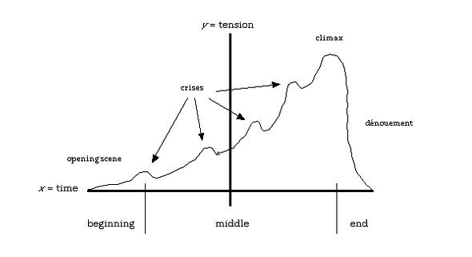

Storytelling
Classic storytelling principles
Remember your high-school English classes? You probably talked about the storytelling arc like so:

Interactive stories still follow the same arc. The main difference is the amount of control that the storyteller has vs. her audience. The control between these two parties is on a continuum, not just black and white.
Interactive Storytelling Principles
I have borrowed the from this presentation which shows six patterns of interactive storytelling. I don't necessarily agree with all of the author's points, but I've picked a few that I found noteworthy.
- Amount of control of the storyteller vs the audience. This is a continuum, not just black and white.
- Linear storytelling is still the most common because life, our reality is essentially linear.
- The extent to which our audience can control the outcome or their paths towards one outcome makes the storyteller's job more complicated and difficult. Regardless of the number of paths to an ending, the storylines must all still be valid and vibrant. A great linear story is better than an poorly told multi-path story.
- It is arguable whether an open-ended video game like SIMS is actually interactive storytelling. I would argue that it is not. What do you think?
Examples of Interactive Storytelling
In-class time to work on Marketing Campaigns assignment
Review your mockups with me.